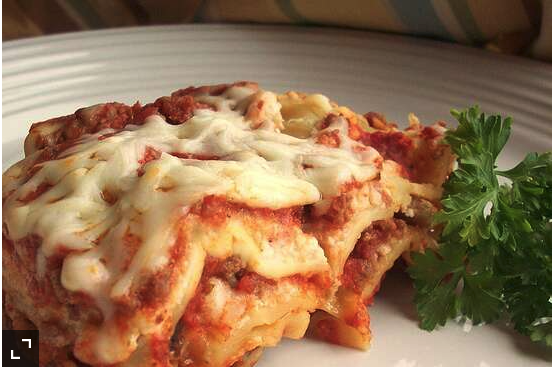

Lasagna

Description
- 1 pound ground beef
- 1 pound bulk Italian sausage
- 1/2 cup warm water
- 1 cup sliced black olives
- 1 pinch basil
- 2 teaspoons garlic powder
- 1 tablesppon dried oregano
- 1 1/2 teaspoons dried sage
- 2 teaspoons ground black pepper
- 2 tablespoons minced garlic
- 1 tablespoon dried onion flakes
- 2 (14 ounce) jars marinara sauce
- 1 (16 ounce) package lasagna noodles
- 8 ounces ricotta cheese
- 1 pound mozzarella cheese, shredded
Steps
- Brown the ground beef and Italian sausage in a large skillet over medium-high heat.
Drain excess grease. Stir in the water and black olives, and season with basil,
garlic powder, oregano, sage, pepper, minced garlic, and onion flakes. Simmer
for about 15 minutes, stirring frequently. Stir in the marinara sauce, and
remove from the heat.
-
Preheat the oven to 375 degrees F (190 degrees C).
-
Place a layer of the meat and sauce in the bottom of a 9x13 inch baking dish.
Cover with a layer of dry noodles. Spread a thin layer of ricotta cheese over the
noodles, and sprinkle with a little mozzarella cheese. Cover with another layer of
sauce, and repeat layering ending with the meat and sauce on top. Reserve about
1/2 cup of mozzarella cheese for later.